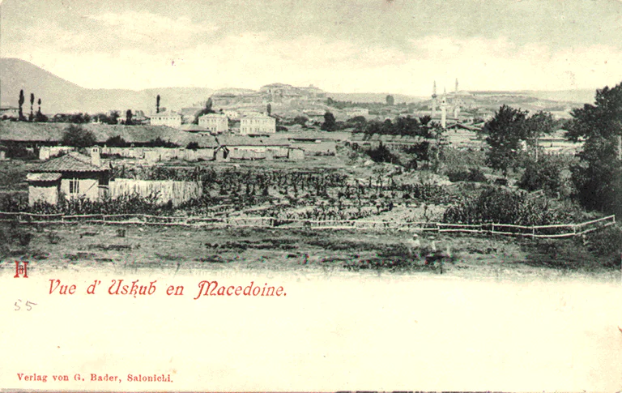
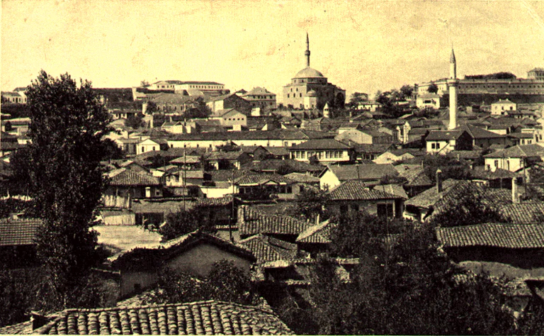
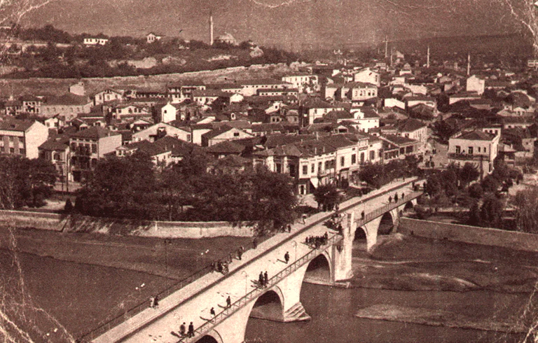
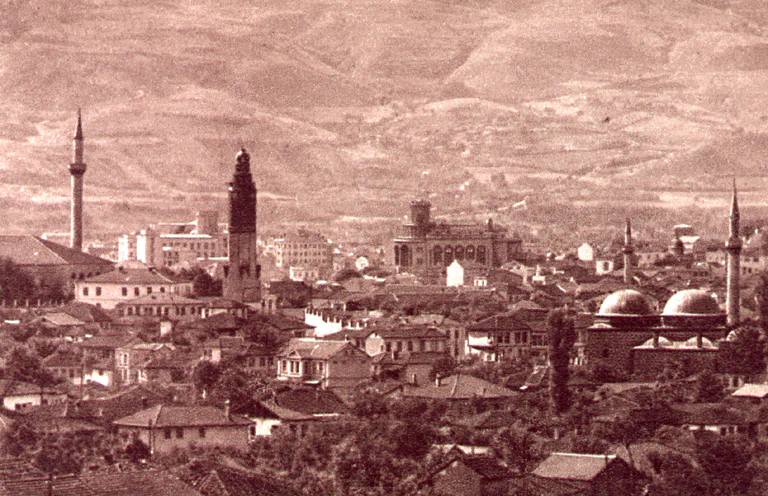
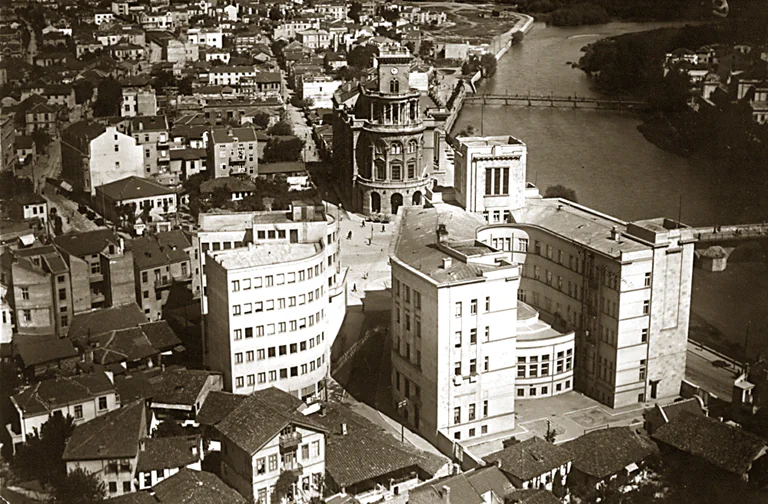

Скопље 1916 - 1917 панорама 2
Документи из Балканских ратова
- Година
- 1916-1917
- Трајање
- 00:12

Скопље крајем 19. века. Поглед на неизграђене просторе нове махале на десној обали Вардара. У позадини се види градска тврђава - Кале. У десном делу је брдо Гази Баба.

Крај 19. века. Неизграђени простори на десној обали реке Вардар. Само мали број кућа поред саме реке. У позадини се уздиже скопска тврђава - Кале.

Скопље 1888. године, фотографисано са брда Гази Баба ка скопској тврђави - Кале.

Поглед на град са Сахат-куле, ка северном делу Скопља са старим турским и македонским махалама. У позадини је брдо Гази Баба. (крај 19. века)

Скопље - поглед на стари део са старом чаршијом. У позадини се види Мустафа-пашина џамија, а десно од ње скопска тврђава - Кале са касарнама. У првом плану виде се стамбени објекти у махали Гази Баба - крај 19. века.

Скопље, почетак 20. века. Поглед са Сахат-куле на стари јавни, трговачки и занатски центар, са простором чаршије. Нови архитектонски облици у старој урбаној структури. У позадини доминирају Мустафа-пашина џамија и градска тврђава са касарнама. Испод ње је Паша Јигит-бегова џамија, најстарија џамија у Скопљу (данас не постоји).

Поглед са скопске тврђаве - Кале према планини Водно. Одмах испод Калеа је Јеврејска махала. Виде се Вардар и Камени мост. Одмах поред њега је Бурмали џамија
- почетак 20. века.

Поглед са скопске тврђаве - Кале према планини Водно. Одмах испод Калеа је Јеврејска махала. Виде се Вардар и Камени мост. Одмах поред њега је Бурмали џамија
- почетак 20. века.

Поглед на Јеврејску махалу и град са скопске тврђаве - Кале. У првом плану је синагога (без крова). Десно је Камени мост - почетак 20. века.

Поглед са скопске тврђаве - Кале ка Каменом мосту и Бурмали џамији. На овој фотографији занимљиво је приметити колико је мало град био распрострањен на десној обали Вардара. Фотографија је снимљена крајем 19. века. Далеко у позадини види се фабрика пива или, како су је тада звали, „Биварија“. У првом плану је део Јеврејске махале.

Панорамски приказ централног градског подручја с краја 19. века. У средини је турско позориште. На десној обали Вардара, одмах поред Каменог моста, види се Бурмали џамија.

Фотографија је снимљена са зидина скопске тврђаве - Кале, пре Првог светског рата. У подножју су стамбени објекти Јеврејске махале, школа и синагога. Лево је црква Св. Димитрија.

Панорамски снимак, начињен са скопске тврђаве - Кале почетком 20. века. У предњем делу је неколико војника из круга касарне. У подножју виде се куће јеврејске махале и Пајко махале, затим Камени мост, а одмах поред њега Бурмали џамија. Даље се наставља нови део Скопља, а у даљини назире се фабрика пива.

Поглед са скопске тврђаве - Кале ка планинама Водно и Китка. У средњем плану фотографије види се Камени мост, а одмах поред њега Бурмали џамија.

Скопље за време Првог светског рата. На фотографији се види логор српске војске, лоциран у близини цркве Св. Спаса, чији се звоник види у позадини.

Панорама Скопља - 1920-их. У подножју је јеврејска махала са школом и синагогом. Види се изградња Народног позоришта.

Панорамска слика Скопља (око 1920). На овој фотографији занимљиво је видети планину Водно. Заправо њену „голет“, за разлику од данас, када обилује прекрасним шумама. Пошумљавање је вршено по завршетку Другог светског рата, организованим омладинским акцијама. У првом плану је Јеврејска махала са синагогом и Јеврејском школом.

Поглед на град Скопље са скопске тврђаве - Кале. У првом плану је Јеврејска махала са синагогом, школом и Народним позориштем. У левом делу фотографије виде се Камени мост и Официрски дом у изградњи - 1920-их.

Скопље, 1920-их. Поглед са скопске тврђаве - Кале на Јеврејску махалу.

Панорамска фотографија Скопља са Гази Бабе ка скопској тврђави - Кале. (почетак 20. века)

Мустафа-пашина џамија, у позадини, а испод ње делимично се види Паша Јигит-бегова џамија, која је била најстарија џамија у Скопљу. (данас не постоји)

Поглед на Скопље са Гази Бабе. У првом плану је ситна стамбена структура стамбених махала. У позадини су Мустафа-пашина џамија и војне касарне у јужном и северном делу градске тврђаве - Кале.

Поглед на стари део града на левој обали Вардара. У првом плану су приватни стамбени објекти. У средини је комплекс старе скопске чаршије. У задњем делу доминира Мустафа-пашина џамија, а иза ње су градски затвор и касарнски објекти, који су се налазили на Калеу. Испод Мустафа-пашине џамије је Паша Јигит-бегова џамија, најстарија џамија у Скопљу (данас не постоји). (1920-их)

Панорама старе урбане структуре града, измењене процесом европеизације и изградњом објеката са класичним, еклектичним и другим стилским обележјима. Фотографија је снимљена са Сахат-куле ка Мустафа-пашиној џамији. Десно се види скопска тврђава - Кале са касарнама - 1920-их.

Чаир - стари део града (данашња општина Чаир). У првом плану је Гази Иса-бегова џамија, а у позадини Јахја-пашина џамија. - око 1920. године

Панорама Скопља - лева обала са насељем Чаир и делом Гази Бабе. У првом плану је Гази Иса-бегова џамија, а у позадини Јахја-пашина џамија. (1920-их)

Сахат-кула - изграђена 1566-72. год. У позадини су Гази Иса-бегова џамија и Јахја-пашина џамија - 1920-их.

Панорама старог дела града, ка Гази Баби. Поглед са скопске тврђаве - Кале. Најдесније је Султан-Муратова џамија, а лево од ње Сахат-кула. У истој линији лево види се Гази Иса-бегова џамија - 1920-их.

Панорамски приказ централног градског подручја.- 1920-их.

Зимски пејзаж централног подручја града. У првом плану су хаотично изграђени објекти, на чијој је локацији касније изграђена Народна банка. Тераса на делу објекта који се види је летњи биоскоп. Два стуба на крају су држачи платна, а на празном делу ређане су столице за гледаоце. Лево горе види се скопска тврђава - Кале. (1920-их)

Снимак централног дела града из авиона (око 1928. год.). Доминирају Официрски дом, Камени мост, Народно позориште и Јеврејска махала. Узводно на Вардару види се дрвени мост који води до Народног позоришта. У горњем десном делу види се део Калеа. У првом плану је део насеља Нова махала. Фотографија је снимљена лети, јер је река веома повучена.

Снимак централног дела града из авиона (око 1928. год.). Доминирају Официрски дом, Камени мост, Народно позориште и Јеврејска махала. Узводно на Вардару види се дрвени мост који води до Народног позоришта. У горњем десном делу види се део Калеа. У првом плану је део насеља Нова махала. Фотографија је снимљена лети, јер је река веома повучена.

Панорамска фотографија Скопља из авиона. Обухваћена је више десна обала Вардара, на којој доминира Официрски дом. Десно је Ристићева палата. Испред ње је трг на коме се у средини види уређено зеленило. Примећују се и фијакери, којима је трг био главно стајалиште за превоз грађана. Две обале повезује Камени мост. Доле десно види се Народно позориште, прекрасна грађевина за којом тугују многи стари Скопљанци.

Панорамски снимак левог дела града са Каменим мостом и махалама: лево - Јеврејска махала, десно - Пајко махала. Десно од моста је споменик палим борцима у Балканским ратовима, који се налазио испред Отоманске банке. У позадини се виде делови џамија и Сахат-куле, као и насеља Чаир и Гази Баба. (1920-их)

Панорамска слика Скопља, односно левог кеја Вардара са делом Јеврејске махале, Пајко махалом и Каменим мостом. (1920-их)

Поглед на Камени мост са куле Официрског дома. Одмах поред моста са десне стране налазила се ординација зубара др Рубена. Мало десније је објекат Отоманске банке. Између њих био је мали трг на коме је било стајалиште фијакера. А у средини трга био је споменик палим борцима - око 1927. године.

Поглед на Камени мост са куле Официрског дома. Одмах поред моста са десне стране налазила се ординација зубара др Рубена, као и Земљорадничка банка. Десно је објекат Отоманске банке. Између њих био је мали трг на коме је било стајалиште фијакера. А у средини трга био је споменик палим борцима у Балканским ратовима - око 1927. године.

Поглед на Камени мост са куле Официрског дома. Одмах поред моста са десне стране налазила се ординација зубара др Рубена. Мало десније је објекат Отоманске банке. Између њих био је мали трг на коме је било стајалиште фијакера. А у средини трга био је споменик палим борцима - око 1927. године.

Поглед ка Каменом мосту на Вардару и делу леве обале Вардара, односно ка Пајко махали, фотографисан са куле Официрског дома. Одмах поред моста са десне стране налазила се ординација зубара др Рубенса. Десно је објекат Отоманске банке. Између њих био је мали трг на коме је било стајалиште фијакера. А у средини трга био је споменик палим борцима у Балканским ратовима - око 1927. године.

Панорамски снимак - поглед на Камени мост, са скопском тврђавом - Кале у позадини и Јеврејском махалом - 1920-их.
.

Скопље после 1930. год. Лево је Народна банка, а десно Официрски дом. У првом плану је део минарета Ибни Пајко џамије и објекат зубара др Рубена. На малом тргу била је пекара са најукуснијим симитом у Скопљу и стајалиште фијакера за превоз грађана.

Поглед на Вардар са скопском тврђавом - Кале, а на десној страни назире се град. Видљиви су Официрски дом и Народна банка. - 1930-их

Прекрасна фотографија града и тока Вардара. Лево је скопска тврђава - Кале. У средини се виде објекти Официрског дома и Народне банке. Десно је планина Водно, а у даљини обриси планине Китке. - 1930-их

Прекрасан призор тока Вардара са планином Водно и насељем Буњаковец. Видљиви су Официрски дом и Народна банка. (1930-их)

Поглед на насеље Буњаковец - 1930-их, са делом градског парка, у десном делу фотографије.

Део новоизграђеног насеља Буњаковец 1920-их. Виде се двоспратни објекти скромног архитектонског третмана.

Поглед на насеље Буњаковец, 1930-их.

Изглед насеља Буњаковец, које се данас налази у централном градском подручју. Виде се низови стамбених објеката планске изградње, по урбанистичком решењу за насеље Буњаковец.

Прекрасан панорамски зимски пејзаж. Фотографија је снимљена са скопске тврђаве - Кале ка планини Водно. У десном средњем делу виде се објекти: Официрски дом и привредна трговинска комора.

Поглед на Камени мост на Вардару. С друге стране реке су: лево - Народна банка, десно - Официрски дом.

Панорама Скопља - фотографисана са скопске тврђаве - Кале. Доминирају два објекта: десно - Официрски дом, а лево - Народна банка. У првом плану је Јеврејска махала. (1930-их)

Снимак централног дела града из авиона. Обухваћен је трг са Официрским домом и Народном банком. Изнад се виде Народно позориште и мали дрвени мост.

Снимак града из авиона. Обухваћени су трг са Официрским домом, Народном банком, привредном комором, махале: Јеврејска и Пајко махала, и Камени мост. Лево горе види се цела градска тврђава - Кале са касарном. Поред ње налази се Мустафа-пашина џамија, а у позадини назире се Јахја-пашина џамија.

Фотографија из авиона саборне цркве Св. Богородице у Скопљу, подигнуте 1835. године (у центру, са високим звоником), и цркве Св. Мине из 1902. године (лево, са два звоника). Околина је Пајко махала.

Скопље, 1930-их. Стари део града. Поглед кроз прозор са гвозденим решеткама старог турског објекта.

Панорама града. Најлевље је Султан-Муратова џамија, а десно од ње Сахат-кула. Најдесније је Гази Иса-бегова џамија. У позадини се виде Народна банка и Официрски дом. У позадини се уздиже планина Водно. (1930-их)

Панорама града. У позадини је Султан-Муратова џамија, а десно од ње Сахат-кула. Најдесније је Гази Иса-бегова џамија. У позадини се виде Народна банка и Официрски дом. (1930-их)

Снимак града из авиона. У доњем делу види се Камени мост и Официрски дом. Узводно је мали дрвени мост који води до Народног позоришта и Јеврејске махале. У горњем делу је скопска тврђава - Кале са касарном. Снимљено 26. јуна 1933. у 10 часова ујутру.

Празан неизграђен простор испред данашњег Музеја града Скопља. Лево се виде хотели „Бристол“ и „Српски краљ“ који се налазе у главној улици која води до трга. У истој улици види се, у средини фотографије, Крангова палата. (1930-их)

Снимак трга из авиона. У првом плану је Народна банка са задње стране, а десно од ње привредна трговинска комора. Наспрам Народне банке налази се Официрски дом. Десно се види Вардар и део Каменог моста. Узводно се види дрвени мост који је водио до Народног позоришта, које се такође види у горњем десном углу фотографије.

Документи из Балканских ратова
 Аквадукт4 разгледнице
Аквадукт4 разгледнице Кале30 разгледница
Кале30 разгледница Мостови60 разгледница
Мостови60 разгледница Кеј58 разгледница
Кеј58 разгледница Трг46 разгледница
Трг46 разгледница Објекти66 разгледница
Објекти66 разгледница Хришћански храмови19 разгледница
Хришћански храмови19 разгледница Муслимански објекти33 разгледнице
Муслимански објекти33 разгледнице Официрски дом29 разгледница
Официрски дом29 разгледница Позориште28 разгледница
Позориште28 разгледница Железничка станица13 разгледница
Железничка станица13 разгледница Школе36 разгледница
Школе36 разгледница Паркови12 разгледница
Паркови12 разгледница Пијаце18 разгледница
Пијаце18 разгледница Улице38 разгледница
Улице38 разгледница Панорама I60 разгледница
Панорама I60 разгледница Панорама II30 разгледница
Панорама II30 разгледница Колажи55 разгледница
Колажи55 разгледница Поплаве9 разгледница
Поплаве9 разгледница Земљотрес27 разгледница
Земљотрес27 разгледница Скопље 200026 разгледница
Скопље 200026 разгледница